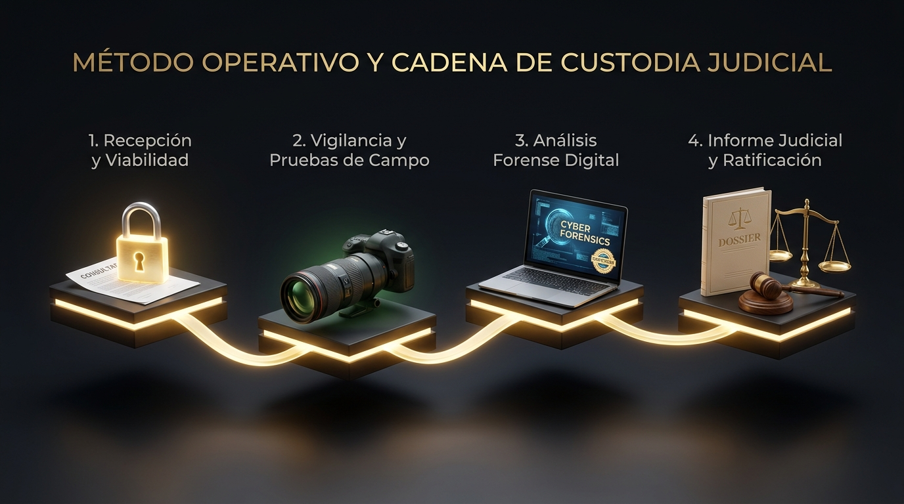

Sabemos que la opacidad genera incertidumbre. Te explicamos exactamente cómo trabajamos, paso a paso, para que puedas decidir con toda la información y garantías legales.

Todo comienza con una conversación. No un discurso comercial. Escuchamos tu situación, entendemos el contexto y valoramos contigo si una investigación tiene sentido. La consulta es confidencial, sin compromiso y sin juicios.
No todas las situaciones requieren una investigación. Analizamos la viabilidad legal y práctica de cada caso. Si consideramos que una investigación no es la mejor opción, te lo decimos con honestidad. Una agencia que también sabe cuándo no recomendar una investigación transmite una enorme credibilidad.
Diseñamos un plan adaptado a tu caso concreto. Te explicamos qué vamos a hacer, cómo, en qué plazos y con qué inversión. No hay letra pequeña ni sorpresas. Cuando el futuro deja de ser difuso, disminuye la ansiedad.
Ejecución rigurosa por detectives habilitados. Dentro del marco legal vigente. Con absoluta discreción. Te mantenemos informado del progreso sin comprometer la operación. Nuestro objetivo es obtener hechos, no confirmar hipótesis.
Recibes un informe profesional con los hechos documentados. Si el caso lo requiere, con plena validez judicial. Te explicamos el alcance de los resultados y te ayudamos a entender tus opciones. Nuestro trabajo termina cuando sientes que puedes decidir con tranquilidad.
Confidencial, sin compromiso y sin presión. Existe para ayudarte a ver tu situación con más claridad.